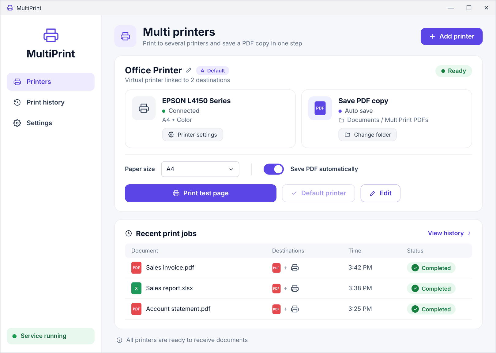

Бесплатная программа для Windows: печать на несколько принтеров одновременно
Печать на все принтеры.
Одновременно.
Один виртуальный принтер отправляет каждый документ на два и более выбранных принтера и автоматически сохраняет копию PDF в вашу папку.
Windows 10 / 11 · Бесплатно · Открытый код · v3.0.0

Всего три шага.
- 1
Создайте мультипринтер
Откройте DualPrint, задайте имя и выберите два или более принтера — обычные, PDF или оба.
- 2
Печатайте как обычно
В Word, Excel, браузере или бухгалтерской программе выберите новый принтер по имени.
- 3
Готово
Документ печатается на всех принтерах одновременно, а PDF сохраняется в папку.
Всё нужное. Ничего лишнего.
Простая настройка
Без установки драйверов и сложных настроек — первый мультипринтер готов меньше чем за минуту.
Печать на 2+ принтера
Одно нажатие отправляет задание на все связанные принтеры.
Автосохранение PDF
Копия PDF в выбранной папке — без окна «Сохранить как».
Несколько мультипринтеров
Счета, отчёты, чеки — у каждого свои принтеры и папка.
Работает в фоне
Запускается вместе с Windows и восстанавливается сам — окно программы можно закрыть.
5 языков интерфейса
Арабский, английский, испанский, французский и немецкий.
Создано для бизнеса.
Магазины и бухгалтерия
Счёт печатается на принтере, а PDF-архив ведётся автоматически.
Офис и склад
Одна печать — сразу на офисный и складской принтеры.
Клиники и сервисные центры
Копия клиенту и копия в архив за один шаг.
Частые вопросы
Программа DualPrint бесплатная?
Да. Программа бесплатная, с открытым исходным кодом (лицензия MIT).
Как печатать на два принтера одновременно?
Создайте мультипринтер в DualPrint, выберите оба принтера и печатайте на новый принтер из любой программы.
Можно печатать и сохранять PDF одновременно?
Да. Добавьте «Microsoft Print to PDF» и выберите папку — PDF будет сохраняться автоматически без вопросов.
Windows пишет «Windows protected your PC». Это безопасно?
Файл пока не подписан цифровой подписью, поэтому SmartScreen показывает предупреждение. Нажмите «More info» → «Run anyway». Исходный код открыт на GitHub.
Печатайте один раз. Везде.
Скачайте DualPrint и создайте первый мультипринтер меньше чем за минуту.